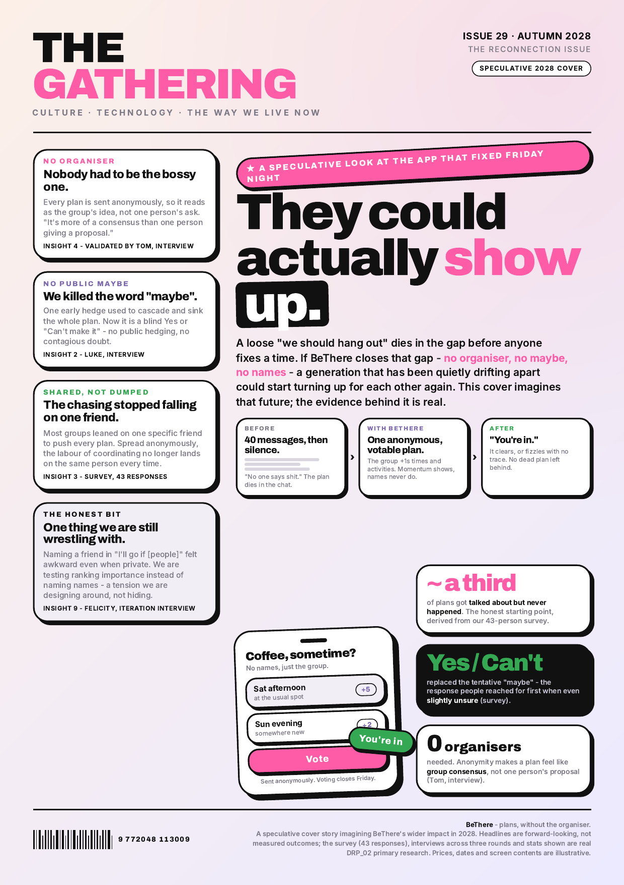

A human-centred design portfolio: from a 47-person survey and three rounds of interviews to a shipped app that turns a loose "maybe" into a plan that actually happens.
DRP_02BeThere
How we ran the research
We worked the Double Diamond across the term, one phase per milestone. From M3 the build itself was the probe: people drove a deployed product on their own phone, so every later finding came from a real person meeting a real artefact.
Survey n=47 and Round 1 interviews
Validated insights and the how-might-we
Live builds tested in Rounds 2 and 3
Evaluation and impact
Method
Who and when
Why this method
Friend Meetup Dynamics survey
47 respondents, 19-21 May 2026
Shows how widespread the behaviour is - is plan-death common, what do people do when unsure - before we commit to a build.
Round 1 discovery interviews
Luca, Luke, Matthew, Noah's friend; pre-build
Surfaces why someone sends a "maybe" - the felt mechanism behind the numbers.
Round 2 iteration usability
Tom, Felicity, Nathan, Fiza; M3, think-aloud on the live app
Reacting to a working artefact gave the sharpest findings: anonymity validated, the conditional challenged.
Round 3 M4 usability
Luca, Nathan, Zack, Will, Fangyi, Thomas; M4, live web funnel
Onboarding, web-link joining and plus-ones, tested on the real funnel with fresh users.
Reflection
Prototype-led research was our most useful technique. As Lukas put it, "if we start with an implementation in code then we can use that to dig into people's brains." Deploying each model and watching people use it beat asking - the hard part was staying non-leading, so we coached each other to drop the jargon.
Human-Centred Design PortfolioApproach
The people we designed for
Vasanth and Milly are composites of the students we interviewed - the two sides of every failed plan: the organiser who burns out chasing replies, and the participant whose "maybe" is really uncertainty.
Vasanth
The Organiser
21 · Law, St Andrews · volleyball, board games, cooks for friends · extroverted, reliable
"I'm normally the only one who actually wants to do it."
Loves seeing his friends, but organising is difficult and chasing replies from hesitant members is frustrating. BeThere lets him float a plan anonymously, so it stops being his job to push.
Goals
See his friends often; get a plan to actually happen without nagging.
Frustrations
Being the only one who pushes; silent replies; plans that die in the chat.
Milly
The Participant
19 · English Literature, St Andrews · cello, reading · new to the netball society · shy, introverted
"I'm down if others are down."
Would love to go to more socials, but she will not commit unless she knows a friend is going too - so her reply is a hedging "maybe". BeThere lets her say yes privately and conditionally, with names never shown.
Goals
Go to more socials; not miss out on the new group she just joined.
Frustrations
Committing before she knows who is in; a public "maybe"; being named on the spot.
Grounded in the interviews: organisers (Luca) and participants (Luke: "I'm down if others are down"). One tension we kept honest - Felicity could not name who she would "go if" even privately - so we softened that to "at least one" rather than a named person.
Human-Centred Design PortfolioPeople
Who the product touches
BeThere is not competing with "no tool" - it competes with the silent WhatsApp thread, and leans on hosted services. Stakeholders sit in rings by how directly the product touches them.
Indirect - affected, not users
The group chat / WhatsApp (the incumbent) · University and societies · Venues and hosts · Hosted services (Clerk, AWS, Vercel)
Direct - drawn into a plan, not driving it
Wider group members · People named in a conditional · Plus-ones and cross-group guests
Core - the people it is for
Organisers (Vasanth) · Participants (Milly)
Core need
Move a plan without bearing the social cost of being the pusher. Only 6 of 47 mostly lead; Tom, Felicity, Luca.
Direct need
Show interest without the maybe-cascade, and never be named awkwardly. 87% send a maybe; Felicity's tension.
Indirect need
Beat WhatsApp on convenience, or users stay put. Felicity: "why bother if you're on WhatsApp anyway?"
The hardest stakeholder is the one we replace: Felicity's "a website would be less stressful" is why BeThere later shipped a web target and a no-download share link. As Luke put it, when a plan dies in the thread, "no one says shit".
Human-Centred Design PortfolioPeople
What the research told us
After dropping a navigation app ("Stumble") and a "prediction market for your friend group", we converged on meetup coordination around 19 May. The seed was Noah's discovery note: a friend whose meetups "fail about once a week... people not saying whether or not they can make it" - "if only there was a discrete way to say whether you can make it".
87%
send a "maybe" or delay their reply to a plan they are unsure about.
51%
say over a third of their meet-ups never make it out of the chat.
60%
say the meet-up time gets moved half the time or more.
83%
say smaller groups make it easier; almost none say larger.
Validated insights (survey + interviews)
01
The bottleneck is suggestion and commitment, not execution. Plans die before a time is fixed; people who show up are fine. (Luca; 60% say the time gets moved half the time or more.)
02
The "maybe" and silence are the failure mechanism, and uncertainty is contagious. Luke: "it cascades uncertainty on the group... that is a website written off". Survey: 87% send a maybe or delay.
03
Effort is asymmetric; nobody wants to be the organiser. Only 6 of 47 mostly lead. (Felicity, Tom, Luca.)
In their own words - why plans died
"Couldnt be arsed." · "Too tired to go potentially because its too far." · "Something else came up that I wanted to go to more than the meet up." · "My failure to plan accordingly, eg I forgot."
Low-stakes drift - the kind a blind, deadlined commitment is designed to hold together.
The opportunity
How might we help a group of friends turn a loose intention to meet into a committed plan, without anyone having to be the organiser, and without the social pressure of a public "maybe"?
Human-Centred Design PortfolioDiscover
Journey maps: before and after
We mapped one real pub quiz two ways - as Vasanth (organiser) felt it, and as Milly (participant) felt it. Both curves only ever fall, for opposite reasons: his is effort, hers is uncertainty. On BeThere, the same plan inverts.
Vasanth's pub quiz, as he felt it
Milly's pub quiz, as she felt it
Vasanth's new journey on BeThere (the faint line is the group chat - it still dies)
The same plan, three ways. Both before-curves only ever fall - his by effort, hers by uncertainty - while on BeThere the line climbs. That inversion, from a dying thread to a plan that lands, is what the whole design is for.
Human-Centred Design PortfolioFuture state
Service blueprint
The future journey runs on one typed system. There is no scheduler - phases settle lazily on read - and the privacy promises that make the moment feel safe are enforced in the server, out of the client's reach.
The promises that make the moment feel safe - enforced in the server, not the screen
No one sees who proposed it
Creator anonymity is on by default; the read layer returns only a private "is this me?" boolean, never the creator's id.
No one sees how you voted
Collecting shows the +1 totals for momentum but never the voter set; the moment reveals nothing about others until it resolves.
A dead plan dies quietly
If it misses quorum it fizzles on the next read and drops out of every dashboard - no push, no awkward dead thread.
These promises are structural, not copy: anonymity and the blind moment live in the server's procedures (events.ts, db/schema.ts), so they cannot leak to the client.
Human-Centred Design PortfolioFuture state
Prototyping: the fidelity ladder
Prototyping was a deliberate fidelity ladder, raised one rung only when a real question ran out of answers. Paper showed the journey made sense but not whether the interaction model was right; the skeleton gave behaviour but we drove it ourselves; live builds let a friend use the actual product on their own device, which is what made the iteration interviews genuine usability tests.
R1
Hand-drawn M2 mock-ups. Is the screen-to-screen flow legible?
R2
Clickable walking skeleton. Does the whole loop hold end to end?
R3
Publicly deployed live builds. Will a real friend, on their own phone, get it?
R4
Successive concept prototypes. Which interaction model do users want?
Concept to experience: from a paper moment sheet to the shipped loop
Paper sketch
Shipped app
The tick-box moment sheet became the real events.respond conditional. The shipped loop: suggest a meet, a blind vote that stays private to you, then a Going / Open / Done dashboard - driven by friends on their own phones.
Human-Centred Design PortfolioTesting and validation
From finding to change
The artefact that kept us honest: every change we shipped points back at a real survey number or interview quote. If a finding did not exist, the feature did not get built.
Finding (source)
Insight
Change shipped
87% send "a maybe" or delay when slightly unsure; only 6 of 47 give a clean answer. (survey, n=47)
Hedging is the default, and the failure mechanism.
A blind, deadlined RSVP - Yes / Can't make it / "I'll go if [people]" - no public maybe, no running tally.
"The organisers should have an option to be anonymous... no pressure on that person at all" (Tom); only 6 of 47 mostly lead.
Anonymity reframes a plan as group consensus.
Creator anonymity is always on - the group sees the meetup, never who proposed it. No toggle.
"You split the load across your friends... without feeling like you're dragging everyone" (Felicity);83% say smaller groups are easier.
People want to co-decide, not be organised.
Two member-fed candidate lists, TIME and ACTIVITY, anyone can add to and +1; counts public, names never.
"A checkbox or a switch... this is a concrete event, you cannot change it... like a football match" (Tom); confusion over three suggest modes.
One switch should cover concrete and open, not three modes.
lockTimes / lockActivity flags; a fully pinned plan skips straight to a blind moment. The three-mode fork was deleted.
"The deadline would be better... but only if there was a push... like BeReal, it goes off, ding ding ding" (Tom).
A blind, deadlined, push-driven yes/no beats an open poll.
Lock-in deadline plus device-local "Voting closes" / "RSVP closes" reminders.
The countdown bar turned greener as the deadline neared, signalling "you're nearly there" exactly when urgency should rise. (M3 review)
Urgency was being signalled backwards.
The green drain bar became a plain-language countdown ("Voting closes in 2 days"); urgency shown in pink under one hour.
Felicity could not name a friend in a conditional, even privately (R2); Tom liked naming people.
Felt privacy is not the same as technical privacy.
The "Go if [people]" copy was softened and defaulted to "At least one" rather than a named person.
"Hoping people download it is probably not it" (Fangyi Lin); "a website would be less stressful" (Felicity); "it's just a link" (Luca, R3).
The download is the adoption barrier, not the idea.
Invite links and join codes, plus a no-download meetup share link that converts to a responding member.
Human-Centred Design PortfolioTesting and validation
Impact
We frame impact modestly: a 47-response survey, three interview rounds and a working build, but no longitudinal usage data. The claims below are the change the design is intended to produce, told through Vasanth and Milly and tied to evidence the problem is real.
Vasanth The Organiser
Before
Chasing replies, carrying the plan alone: "I'm normally the only one who actually wants to do it."
With BeThere
He floats a plan anonymously and it stops being his job to push - the group owns the meetup, not the organiser.
Milly The Participant
Before
Hedges with a public "maybe" she never escapes, and stays home unless she knows a friend is going.
With BeThere
She says yes privately and conditionally - "I'll go if" - and it only surfaces if enough others matched her. Names never shown.
Wider impact, carefully bounded
The friction we ease is not trivial. 15-24s spend ~70% less time with friends in person than two decades ago (US Surgeon General, 2023); 40% of UK 16-24s feel lonely often or very often, the loneliest age group (BBC Loneliness Experiment, 2018). Fewer dead plans ripples into university counselling load, NHS mental-health provision, society engagement and local venues. We do not claim BeThere cures loneliness - we have not measured wellbeing - but every plan that does not die is a small push against that drift.
Societies & organisers
Higher turnout, less burnout - the plan belongs to the group, not one person.
Universities & support
Fewer students drifting into isolation as plans keep dying in the chat.
Venues & hosts
More groups that actually show up, instead of maybe-then-cancel.
"I care less about what we do, I just want to see them." - Felicity
That line is the whole point: the value is the gathering, not the logistics. We turned it into our impact asset - the cover story overleaf.
Human-Centred Design PortfolioImpact
Impact asset: The Gathering
Our cover story is a speculative 2028 magazine cover - the wider future BeThere is reaching for: shared labour, no organiser, no public "maybe". It is deliberately forward-looking, not a measured claim, and every figure on it traces back to our own primary research.

It carries the personas (Vasanth, Milly), the loneliness context and the no-organiser / no-maybe promise into a single forward-looking artefact - the impact asset, built on the M4 review feedback and deliberately distinct from the pitch leaflet.
Human-Centred Design PortfolioImpact
What HCD did to the product
The strongest evidence that we did human-centred design, not feature-led design, is that the product model itself changed in response to users, repeatedly. The product is smaller and sharper than the one we first imagined, and that narrowing is the clearest signal we were listening.
DELETED
A feature: the three-mode suggest fork collapsed into two lock flags.
PROMOTED
A flag to a principle: anonymity became always-on, the only mode.
LEFT OPEN
A real tension: naming people in a conditional, surfaced not designed away.
What we would do differently
Prioritise onboarding earlier, so the iteration interviews tested the whole journey, not just the core loop. Onboarding only landed in M4.
Open work, framed by user needs
The felt-privacy problem in the conditional (test Felicity's "rank importance" alternative).
Reliable remote push (currently device-local, blocked on a dev build rather than Expo Go).
Competing with the group chat people already live in (the web-first link is the first move).
We deliberately did not collect SUS, task-success or telemetry; the quantitative-evaluation report scopes those instruments, and we will not present an intended outcome as a measured one until they are run.
Reflection
The project's own history is the best evidence of the process: a cancelled feature (scaling moment length by distance), a betting-market idea dropped before it began, three suggest modes collapsed into two flags, and a conditional softened after one participant could not face it. These are the marks of a design that kept changing because real people kept telling us to.